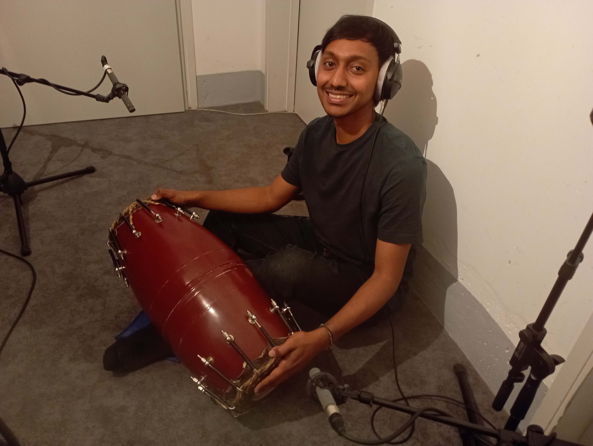
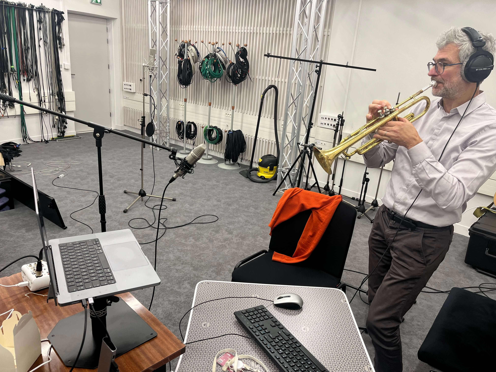
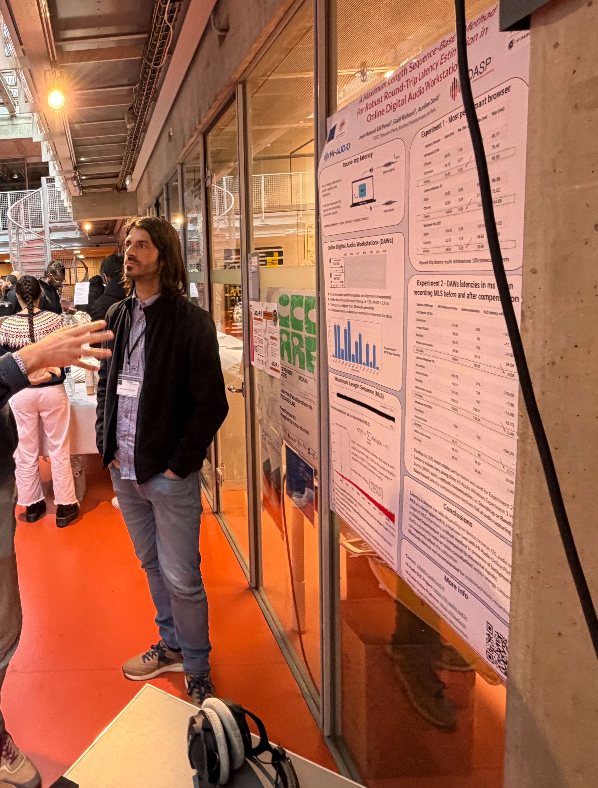
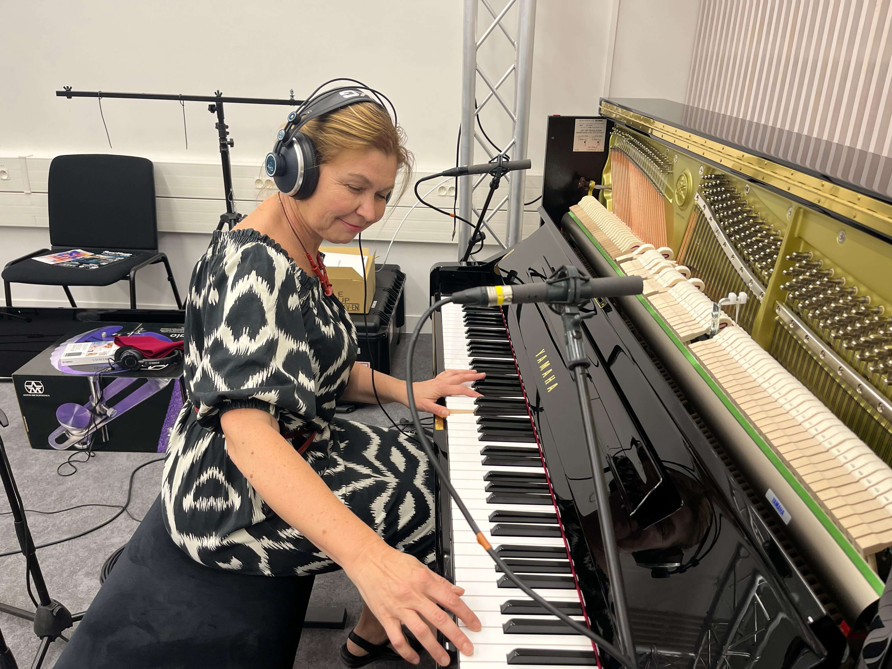

Hi-Audio: four years, in a virtual studio
Explore the studio: click its objects and people, or use Tab and Enter.
![]()
Explore the studio: click its objects and people, or use Tab and Enter.
Everyone knows this tune, which makes it a perfect test for music research: many renditions of the same melody, on different instruments and in different languages. It is also free for everyone to use.
The melody began in 1893 as Good Morning to All, by the sisters Patty and Mildred Hill; Patty ran a kindergarten in Louisville, Kentucky. For decades a publisher collected licence fees on the song, until documentary filmmaker Jennifer Nelson took the case to court in 2013. In 2015 a US judge found the copyright claim invalid. The song was declared public domain in the US in 2016, and its copyright expired in the European Union on 1 January 2017.
At Hi-Audio, we felt this story deserved to be retold in the language we know best: music. So we recorded it together, in many voices!
Listen to the collection (opens in a new tab) The story of the song (opens in a new tab) Watch the documentary (opens in a new tab)
John Lennon recorded a home demo around 1977. In 1994, Yoko Ono gave the cassette to Paul McCartney. In 2022, Peter Jackson's team used machine learning to separate Lennon's voice from the piano on the demo. Later that year, on 30 November, ChatGPT launched, bringing a new wave of public attention to artificial intelligence.
Nearly a year later, just days before ISMIR 2023, The Beatles released Now and Then, bringing Lennon's voice back to listeners. The following week, Hi-Audio was presented at ISMIR in Milan. As the race to bring AI and music together gathered pace, Hi-Audio set out to contribute a collaborative platform and data open to research. Nobody said it was easy... No one ever said it would be this fun!

About Now and Then (opens in a new tab) Hi-Audio at ISMIR 2023 (opens in a new tab)
The other end of music technology: an orgue de Barbarie, or barrel organ. The player turns a crank; bellows push air through the pipes, and the tune is stored mechanically, as pins on a barrel or holes punched in a paper roll or a folded cardboard book. Chantal's street performance was filmed and its sound uploaded to Hi-Audio as field data: a real outdoor recording, street noise included.
What is a barrel organ? (opens in a new tab) Collection Orgue de Barbarie on Hi-Audio (opens in a new tab)
When Vishal Nagarajan joined Télécom Paris as a research engineer on the AUDIBLE project, he brought more than his technical expertise: he also brought his calm presence, his savoir-faire, and his mridangam. During an informal “free-lunch” session, he introduced the ADASP group to the instrument, sharing its sounds, techniques, and cultural context. We discovered not just a percussion instrument, but a rich musical tradition and a different way of thinking about rhythm from the classical Western music many of us knew. In June 2024, Vishal recorded his mridangam on Hi-Audio so others could listen, too. Thanks for this opportunity, Vishal!

Purpose: Konakkol helps musicians internalize complex rhythms and collaborate.
Listen in Hi-Audio (opens in a new tab) About the mridangam (opens in a new tab)
Gaël Richard joined Télécom Paris in 2001 and is now Full Professor of Audio Signal Processing. He is also the Scientific Director of Hi! PARIS (opens in a new tab), the interdisciplinary center for AI and data analytics.
His research focuses on machine learning for speech, audio and music. He has co-authored more than 300 papers and is named on 10 patents. A Fellow of IEEE and ELLIS, he received the IMT–National Academy of Science Grand Prize in 2020. In 2022, he received an Advanced Grant from the European Research Council for HI-AUDIO, a project on artificial intelligence for sound.
A formally trained musician and experienced trumpeter, Gaël brings an experienced performer’s perspective to the project.

Personal page (opens in a new tab) IMT–National Academy of Science Grand Prize (opens in a new tab) HI-AUDIO and the ERC Advanced Grant (opens in a new tab)
Jose is a research engineer who enjoys songwriting, plays guitar, and sings.

Aurélien David is a research engineer at Télécom Paris who has been part of the Hi-Audio project since its beginning in 2022. He has supported Jose on the software side, especially with the backend, DevOps, and infrastructure, bringing deep expertise to the system—and through many valuable coffee breaks along the way. Aurélien helped show how a proof of concept could grow into a real product.
Based in Canada, Naomi Aro is a Senior Software Developer whose career has included work with Spotify and, currently, Moises AI. She is also the author of Mastering Tone.js. Most importantly to us, she created and maintains the core of Hi-Audio: waveform-playlist, a remarkable multitrack web audio editor that helps make online music collaboration possible.
Thank you both for making Hi-Audio what it is!
Aurélien on GitHub (opens in a new tab) waveform-playlist fork on GitHub (opens in a new tab) Naomi personal website (opens in a new tab)

In summer 2024, our colleague Matteo Gionfriddo was working on a separate research project for his master’s thesis, Controllable music generation with neural discrete representations and a multitrack MIDI-to-audio dataset (opens in a new tab). His project created Audio909 by using a self-playing upright piano—a kind of “ghost player”—to turn existing MIDI pieces into acoustic recordings. The piano, microphones, and studio were already set up for his experiments. At Hi-Audio, we value the human touch in music, so we invited Tetiana Viktory, one of Télécom Paris’s piano teachers, to register on the platform and record her own performances. You can listen to her beautiful recordings below; they are part of the Hi-Audio corpus. Matteo’s thesis and Tetiana’s recordings were separate projects; nevertheless, the shared studio setup was a fortunate and wonderful coincidence.

Tetiana Viktory is a pianist and composer, and a graduate of the National Music Academy of Ukraine in Kyiv. A laureate of international competitions, she has recorded chamber and orchestral music and taught piano for more than 20 years.
Her work brings Ukrainian and European music into conversation with her own compositions, combining classical traditions with contemporary influences and introducing audiences to Ukrainian music.
Alongside solo performances, Tetiana has performed with orchestras and collaborated with instrumentalists and singers. Since 2022, she has taught at the Artima Association and Télécom Paris and continued her concert work in France.
Her music highlights Ukrainian culture, builds cultural connections, and expresses support for peace and reconstruction in Ukraine.
Her recordings on Hi-Audio (opens in a new tab) More about Tetiana (opens in a new tab)
The platform is described in full in an open-access article in the EURASIP Journal on Audio, Speech, and Music Processing, published by Springer Nature in the special issue on Signal Processing for the Internet of Sounds: its architecture, automatic analysis, latency method and first user study.

Read the article (opens in a new tab)
For the second year in a row, we packed our bags for ISMIR—this time crossing the pond to San Francisco. We didn't expect to meet Scott McKenzie, but his song was already in our heads. There, we presented the extended Hi-Audio platform and introduced our first public dataset: the Happy Birthday collection, an example of what it takes to gather varied, multi-genre music data on the web.
We also recorded this short video tutorial for the virtual audience, showing how to use the platform. Press play to revisit it—and enjoy!
Late Breaking Demo page (opens in a new tab)
No “one, two, three”; no “check, check.” The earliest known intelligible recording of a human voice captured a song: Au clair de la lune, a beloved French folk song familiar to generations of children. In 1860, Édouard-Léon Scott de Martinville recorded a singer with his phonautograph, a machine that traced sound waves on paper but could not play them back. In 2008, the First Sounds group turned the drawing into sound. Played at the right speed, the singer is a man, possibly Scott himself. This earliest musical recording we can hear reminds us that music was part of recorded sound from the start. Capturing music is at the heart of what we do at Hi-Audio, so we wanted to honor this milestone in the history of audio technology.


That April 2025 tribute came to life at our Télécom Paris workshop, where musicians recorded their own version together on Hi-Audio.
Listen to the multitrack version (opens in a new tab) The 1860 recording (opens in a new tab)
On 19–21 November 2025, the Web Audio Conference returned to IRCAM (opens in a new tab) in Paris—the venue of the first WAC in 2015—for its ninth edition and 10th anniversary.
Hi-Audio brought a new method for estimating round-trip latency in online DAWs, developed in our lab and ready to share with the web-audio community. The article, entitled A Maximum Length Sequence–Based Method for Robust Round-Trip Latency Estimation in Online Digital Audio Workstations, received a Best Poster Award in the short-paper category.
Never heard an MLS signal? Go ahead and give it a listen—but lower your volume before you press play; it can be annoying!
Read the short paper (opens in a new tab) Code repository (opens in a new tab) WAC 2025 awards (opens in a new tab)
Near the close of WAC 2025, Jose met Nela Brown, Director of FLO Lab. They promised to keep in touch—and did. Over the months that followed, their conversation grew into Hi-Audio’s first collaboration with the Female Laptop Orchestra.
Early in 2026, nine brave performers, based in nine countries, recorded 16 tracks on Hi-Audio without meeting in a room, then mixed them for the Radiophrenia 2026 festival (87.9 FM in Glasgow, and online).
The practice-based study, led by Nela Brown, Director of FLO Lab, found what works (nothing to install, easy onboarding) and what professional musicians still miss. Those insights can help bring us closer to music without borders, where artists can create together across time zones, cultures, and continents.

Conceived as a fixed composition for Radiophrenia, the final mix was scheduled for submission on 7 March 2026. The piece asks: “We are sending a message into space. By the time it reaches anyone out there, we may be extinct. What would you want to say?”
Each performer answers in their mother tongue. Their spoken words are processed through an ethical AI tool to create the base track. FLO performers around the world then use the open-source Hi-Audio platform to add musical tracks asynchronously, building on the composition together.
Through this process, the musicians explore the state of our world and humanity’s place on Earth and in the universe: our hopes for the future, our pride and disappointments, our cultures, and our values.
Founded in 2014 by Nela Brown, the Female Laptop Orchestra is an international ensemble of professional musicians, visual artists, and researchers working at the intersection of music, technology, and distributed audiovisual performance. By crossing time zones, continents, political borders, and languages, FLO explores intercultural collaboration at a distance and raises awareness of the underrepresentation of women in sound and music computing.
Study results (opens in a new tab) Radiophrenia (opens in a new tab)
In a preliminary user evaluation study organised with La Scène, the music association of Télécom Paris, 22 participants completed ten tasks: recording, annotation, collaboration and latency measurement. 72% of task attempts succeeded.
Recording worked for everyone; annotation and collaboration controls were harder to find. The usability score (SUS) was 55.8 out of 100, “marginal”: a clear list of what to fix next.
The results of this preliminary evaluation were also included in the journal article.


Full results (opens in a new tab)
We acknowledge and thank our partners, whose support helps us build the music and community we share: the European Research Council (ERC), ADASP, Télécom Paris, Institut Polytechnique de Paris, and Institut Mines-Télécom (IMT).